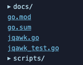
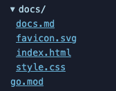

I wrote a git tree visualiser in AWK. Here it is showing the tree for accent.vim, my vim coloursceheme:
You can try it here.
The source code is here.
It generates a single static HTML file. The file tree is on the left, the file content is on the right. Clicking on a file will show its content.
I learned some interesting things about AWK and HTML by writing this, but first.
For fun, and because I like AWK. It's minimal, it's everywhere, it's older than me (and probably you). Writing programs in AWK is like being a beginner again; you have a limited set of tools and you have to find new ways to solve problems with them.
Here are some things I learned about AWK.
I store a type (blob or tree) and a path for each file in the repo. In another language I'd keep a list of objects:
[ { type: "blob", path: "README.md" }, { type: "tree", path: "src" }, { type: "blob", path: "src/main.go" }, ]
But AWK only has one collection type, the associative array. POSIX AWK doesn't support nested arrays either. Unless I want to reply on GNU AWK (I don't), I can't do this:
files[i]["type"] = type files[i]["path"] = path
You can use comma separated indexes though:
files[i,"type"] = type files[i,"path"] = path
This creates an index by joining all the expressions together with SUBSEP. On my system AWK (nawk) SUBSEP is 28, or the ASCII file separator character
This does make the array longer than the number of files since there's two entries per file. I store the number of files in a separate variable.
When a file is binary, I show "binary file" instead of its content. I decided on a very rough heuristic for this: if there's a 0 byte in the first 100 bytes of a file, it's binary. My plan was to read a few lines with getline and call index() to check for a 0 byte:
if (index(line, "\0") > 0) { # file is binary }
But this call to index always returned 1, and every file was considered binary. Here's a small program that hints at why:
$ awk 'BEGIN { print "one two\0three" print index("one\0two", "\0") print length("\0") }' one two 1 0
nawk will parse \0 in a string and insert a 0 byte, but also treats it as a string terminator! This is very confusing if you're not expecting it.
My index call always returned 1 because it's actually checking this:
index(line, "")
nawk decides that an empty string is at position 1 of a non-empty string.
I was curious and tried this across a few AWKs (note that index returns 1 for the first character in the string):
| AWK | length("\0") |
index("a\0b", "\0") |
|---|---|---|
| nawk | 0 | 1 |
| GNU AWK | 1 | 2 |
| BusyBox AWK | 0 | 0 |
| mawk | 1 | 2 |
| GoAWK | 1 | 2 |
GNU AWK, mawk and GoAWK get it right, nawk and BusyBox AWK don't.
I couldn't find a way to check a string for a null byte in nawk, instead I use od to dump the first 100 bytes and check for 00:
function is_binary(name) { while (("od -N 100 -v -t x1 -A n " name | getline l) > 0) { if (index(l, "00") > 0) { return 1 } } return 0 }
getline and close() are weirdTo measure how long the program takes, I store timestamps and calculate the difference. I first did this:
"date +%s" | getline start_ts # ... rest of program "date +%s" | getline end_ts diff_ts = end_ts - start_ts
But end_ts was always empty, unless I commented out the start_ts line. Printing the result of getline gives us some clues why:
$ awk 'BEGIN { print ("date +%s" | getline start_ts) print ("date +%s" | getline end_ts) }' 1 0
1 means success, 0 means end of file.
The first getline executes date and sets up a pipe, the next getline reads from the same pipe! The date command is finished after one line, so there's no more output and we get a 0.
That seems obvious in retrospect, since to read all the output from a command you usually loop over getline until it returns 0.
To close the pipe and run a new command, you have to call close(), with the literal string you used in the first getline. To fix this, I call close("date +%s") after getting each timestamp.
I mean the literal string too, whitespace differences matter:
$ awk 'BEGIN { "date" | getline date1 " date" | getline date2 print date1 print date2 }' Wed 23 Sep 2026 14:35:44 BST Wed 23 Sep 2026 14:35:44 BST
That's it for surprising things I discovered about AWK, on to the web UI.
I decided to make the UI interactive without JavaScript. If I'm going to be the sort of grognard who writes AWK scripts I can't be seen writing JS. Here are some things I learned.
<details> elementI already knew about the <details> element but it's an excellent addition to HTML and I want to remind you it exists. It creates an expandable section with a label (set by the <summary> tag).
I used it to create directories which can be expanded and collapsed:


:target pseudo-classWhen a file is selected in the tree I show that file's content on the right. I used the :target pseudo-class to swap out which file is shown.
First, each file in the tree is rendered as an anchor tag with a document fragment:
<a href="#file-0">.gitignore</a> <a href="#file-1">LICENSE</a> <a href="#file-2">README.md</a>
The content is rendered as a section with a matching id:
<section id="file-0"> <h2>.gitignore</h2> <pre> *.json build/ </pre> </section>
This CSS hides all the sections except the target, which is the element the document fragment points to:
.content > section { display: none; } .content > section:target { display: block; }
Clicking a file will change the URL to #file-X and file X will be shown.
That's it. If you've never tried writing more than a one-liner in AWK I recommend it. It's familiar, but odd.
Probably not.